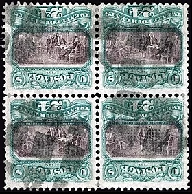

Wikipedia
Welcome to Wikipedia,
the free encyclopedia that anyone can edit.
5,827,065 articles in English
- Arts
- History
- Society
- Biography
- Mathematics
- Technology
- Geography
- Science
- All portals
From today's featured article

Fôrça Bruta (Brute Force) is the seventh studio album by Brazilian singer-songwriter and guitarist Jorge Ben, recorded with the Trio Mocotó band (pictured) and released by Philips Records in September 1970. It introduced an acoustic samba-based music that was mellower, moodier, and less ornate than Ben's preceding work. In a largely unrehearsed nighttime recording session, the singer improvised and experimented with unconventional rhythmic arrangements, musical techniques, and elements of soul, funk, and rock. Ben's lyrics explored themes of romantic passion, melancholy, sensuality, and—in a departure from the carefree sensibility of past releases—identity politics and elements of postmodernism. A commercial and critical success, Fôrça Bruta established Ben as a leading artist in Brazil's Tropicália movement and pioneered a sound later known as samba rock. The album's first American release came in 2007, the same year that Rolling Stone Brasil named it the 61st greatest Brazilian music record. (Full article...)
Did you know
- ... that American philatelist William Thorne owned a unique block of four United States 1869 24-cent stamps with an inverted center (pictured) showing the signing of the U.S. Declaration of Independence?
- ... that Ronnie O'Sullivan won the 2017 Masters snooker event, despite breaking his cue tip in his semifinal match?
- ... that Boro Maa created a refugee colony at Thakurnagar for the Matuas, who were displaced due to the 1947 Partition of Bengal?
- ... that Artur Schnabel's recordings of Beethoven's piano sonatas were the first complete recordings ever made of all of the composer's 32 piano sonatas?
- ... that Jon Teske posted a double-double in his first collegiate start and the first collegiate basketball game played at Little Caesars Arena?
- ... that Tobago's Main Ridge is one of the oldest protected areas in the world set aside for conservation, having been created by the British Parliament in 1776?
- ... that a gay former British prince died fighting on the side of Nazi Germany despite loathing Hitler and the Nazi Party?
- ... that Nickey Barclay played with Fanny, Cocker, and Ball?
In the News
- Nursultan Nazarbayev (pictured) resigns as the first President of Kazakhstan after a 29-year tenure, appointing Kassym-Jomart Tokayev as interim president.
- Karen Uhlenbeck becomes the first woman to be awarded the Abel Prize in mathematics.
- A gunman kills three people and injures five others in a shooting in Utrecht, Netherlands.
- More than 90 people are killed by a flash flood and landslide in Jayapura Regency and Jayapura, Indonesia.
- Ongoing: Battle of Baghuz Fawqani Brexit negotiations Cyclone Idai aftermath Venezuelan presidential crisis
- Recent deaths: Manohar Parrikar Dick Dale Alan Krueger Mike Thalassitis W. S. Merwin Jake Phelps
On this day

- 1814 – War of the Sixth Coalition: At the Battle of Arcis-sur-Aube, Napoleon suddenly realized his army was vastly outnumbered and hurriedly ordered a retreat
- 1861 – Vice President of the Confederate States of America Alexander H. Stephens (pictured) extemporaneously gave the "Cornerstone Speech", in which he laid out the Confederacy's causes for declaring secession.
- 1937 – A police squad, acting under orders from Governor of Puerto Rico Blanton Winship, opened fire on demonstrators protesting the arrest of Puerto Rican Nationalist leader Pedro Albizu Campos, killing 21 people and injuring 235 others.
- 1983 – In the West Bank, a number of Palestinian girls complained of breathing difficulties due to strange odors, leading to accusations of poison gas.
- 2006 – A man using a hammer smashed the statue of Phra Phrom in the Erawan Shrine in Bangkok, Thailand, and was subsequently beaten to death by bystanders.
- Florenz Ziegfeld Jr. (b. 1867) · Salvador Lutteroth (b. 1897) · Wolfgang Wagner (d. 2010)